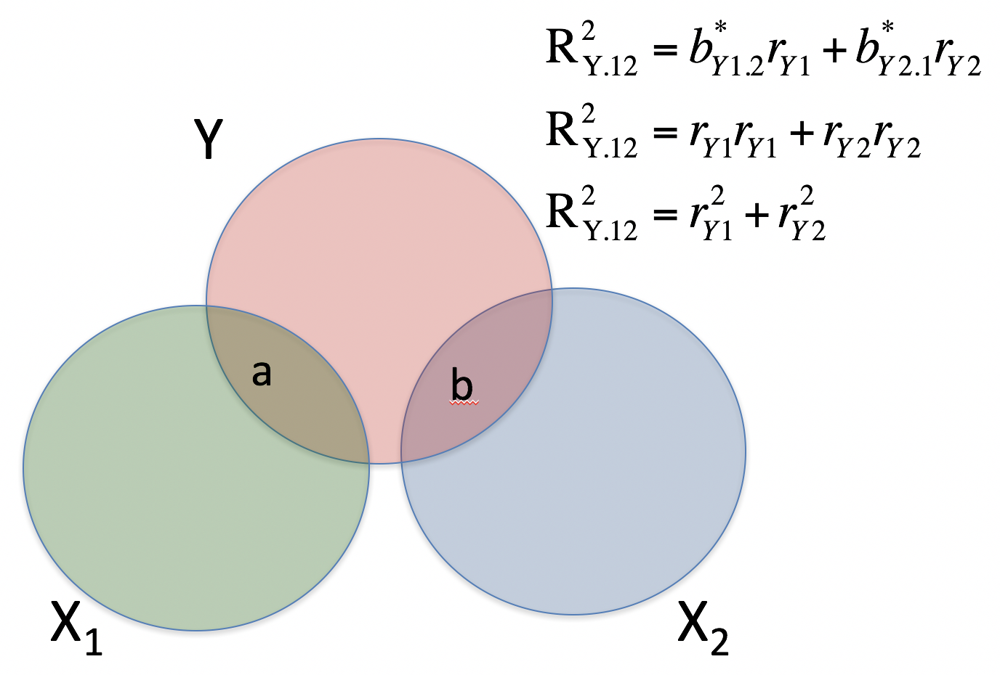
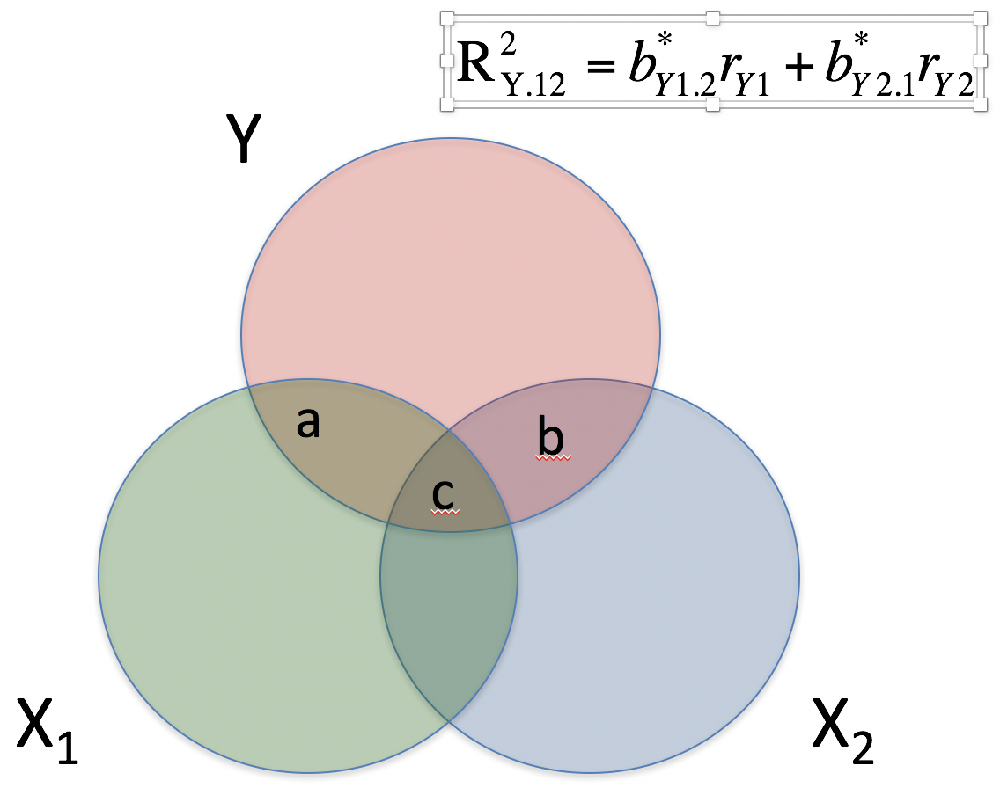

- does parent SES cause better grades?
- r(gpa, ses) = .33, b = .41
- potential confound of peer relationships
- r(ses, peer) = .29
- r(gpa, peer) = .37
casual relationships
Multiple ways variables can relate
- spurious relationship
- indirect (mediation)
- moderate (interaction)
- multiple "causes"
multiple regression model
\[ \hat{Y} = b_{0} + b_{1}X_{1} + b_{2}X_{2}+...+b_{p}X_{p} \]
Coefficient of Determination
\[R^2 = \frac{SS_{reggression}} {SS_{Y}} = \frac{s_{\hat{Y}}^2}{s_{Y}} \]
GPA = SES + Peer relationships
-Can be thought of as overlapping Venn diagrams 
redundent vs non-redundent information

types of correlations
- pearson ignores all outside variables
types of correlations
- semi-partial
- the extent to which the part of X1 that is independent of x2 correlates with all of Y
semi-partial

semi-partial
\[ sr = r_{y(1.2)} = \frac{r_{Y1}-r_{Y2}r_{Y12} }{\sqrt{1-r_{12}^2}} \] \[ sr^2 = R_{Y.12}^2 - r_{Y2}^2 \]
types of correlations
- partial
- the extent to which the part of X1 that is independent of X2 is correlated with the part of Y that is also independent of X2
partial correlation

partial correlation
\[ pr = r_{y1.2} = \frac{r_{Y1}-r_{Y2}r_{Y12} }{\sqrt{1-r_{Y2}^2}\sqrt{1-r_{12}^2}} \]
\[ sr = r_{y(1.2)} = \frac{r_{Y1}-r_{Y2}r_{Y12} }{\sqrt{1-r_{12}^2}} \]
partial correlation
\[ pr^2 = \frac{R_{Y.12}^2 - r_{Y2}^2}{1-r_{Y2}^2} \]
\[ sr^2 = R_{Y.12}^2 - r_{Y2}^2 \]
when to use what?
- semi-partial is best suited to show incremental variance (more practical)
- partial is more effective to rule out third variable (theoretical)
- partial will be larger
same t-test for semi-, partial and partial regression coefficient
how to interpret partial regression cofficients?
- residual in simple regression can be thought of as a measure of Y that is left over after accounting for your DV
- partial correlation can be created by:
- create measure of X1 independent of X2
- create measure of Y independent of X2
- correlate new measures
interpretting multiple regression model
\[ \hat{Y} = b_{0} + b_{1}X_{1} + b_{2}X_{2}+...+b_{p}X_{p} \]
- intercept is when all predictors = 0
- regression coefficients are partial regression coefficients
- predicted change in y for a 1 unit change in x, holding all other predictors constant
example
mr.model <- lm(Stress ~ Support + Anxiety, data = Multipleregression) summary(mr.model)
## ## Call: ## lm(formula = Stress ~ Support + Anxiety, data = Multipleregression) ## ## Residuals: ## Min 1Q Median 3Q Max ## -4.1958 -0.8994 -0.1370 0.9990 3.6995 ## ## Coefficients: ## Estimate Std. Error t value Pr(>|t|) ## (Intercept) -0.31587 0.85596 -0.369 0.712792 ## Support 0.40618 0.05115 7.941 1.49e-12 *** ## Anxiety 0.25609 0.06740 3.799 0.000234 *** ## --- ## Signif. codes: 0 '***' 0.001 '**' 0.01 '*' 0.05 '.' 0.1 ' ' 1 ## ## Residual standard error: 1.519 on 115 degrees of freedom ## Multiple R-squared: 0.3556, Adjusted R-squared: 0.3444 ## F-statistic: 31.73 on 2 and 115 DF, p-value: 1.062e-11
visualizing multiple regression
library(visreg) visreg2d(mr.model,"Support", "Anxiety", plot.type = "persp")

OLS
- similar to before \[ \hat{z}_{Y} = b_{1}^*Z_{X1} + b_{2}^*Z_{X2}\] \[ minimize \sum (z_{Y}-\hat{z}_{Y})^2\]
standardized partial regression coefficient
\[b_{1}^* = \frac{r_{Y1}-r_{Y2}r_{12}}{1-r_{12}^2}\]
\[b_{2}^* = \frac{r_{Y2}-r_{Y1}r_{12}}{1-r_{12}^2}\]
Notice similarity with semi-partial correlation
\[b_{1}^* = \frac{r_{Y1}-r_{Y2}r_{12}}{1-r_{12}^2}\]
\[ sr = r_{y(1.2)} = \frac{r_{Y1}-r_{Y2}r_{Y12} }{\sqrt{1-r_{12}^2}} \]
relationships among partial, semi- and b*
- three different ways to represent same effect
- all standardized
- if predictors are not correlated, sr and pr equal
Original metric
\[b_{1} = b_{1}^*\frac{s_{Y}}{s_{X1}} \]
\[b_{1}^* = b_{1}\frac{s_{X1}}{s_{Y}} \]
Intercept
\[b_{0} = \bar{Y} - b_{1}\bar{X_{1}} - b_{2}\bar{X_{2}} \]
Multiple correlation R
\[ \hat{Y} = b_{0} + b_{1}X_{1} + b_{2}X_{2} \]
Multiple correlation R
- \(\hat{Y}\) is a linear combination of Xs
- \(r_{Y\hat{Y}}\) = multiple correlation = R
Multiple correlation R
\[ R = \sqrt{b_{1}^*r_{Y1} + b_{2}^*r_{Y2}} \] \[ R^2 = {b_{1}^*r_{Y1} + b_{2}^*r_{Y2}} \]


sum of squares decomposition
\[ \frac{SS_{regression}}{SS_{Y}} = R^2 \] \[ {SS_{regression}} = R^2({SS_{Y})} \]
\[ {SS_{residual}} = (1- R^2){SS_{Y}} \]
significance tests
- R2 (omnibus)
- Regression Coefficients
- Increments to R2
R-squared
- Same as before
- Adding predictors into your model will increase R2 – regardless of whether or not the predictor is correlated with Y.
- Adjusted/Shrunken R2 takes into account the number of predictors in your model
Adjusted R-squared
\[R_{A}^2 = 1 - (1 -R^2)\frac{n-1}{n-p-1} \]
Anova table
anova(mr.model)
## Analysis of Variance Table ## ## Response: Stress ## Df Sum Sq Mean Sq F value Pr(>F) ## Support 1 113.151 113.151 49.028 1.807e-10 *** ## Anxiety 1 33.314 33.314 14.435 0.0002336 *** ## Residuals 115 265.407 2.308 ## --- ## Signif. codes: 0 '***' 0.001 '**' 0.01 '*' 0.05 '.' 0.1 ' ' 1
summary(mr.model)
## ## Call: ## lm(formula = Stress ~ Support + Anxiety, data = Multipleregression) ## ## Residuals: ## Min 1Q Median 3Q Max ## -4.1958 -0.8994 -0.1370 0.9990 3.6995 ## ## Coefficients: ## Estimate Std. Error t value Pr(>|t|) ## (Intercept) -0.31587 0.85596 -0.369 0.712792 ## Support 0.40618 0.05115 7.941 1.49e-12 *** ## Anxiety 0.25609 0.06740 3.799 0.000234 *** ## --- ## Signif. codes: 0 '***' 0.001 '**' 0.01 '*' 0.05 '.' 0.1 ' ' 1 ## ## Residual standard error: 1.519 on 115 degrees of freedom ## Multiple R-squared: 0.3556, Adjusted R-squared: 0.3444 ## F-statistic: 31.73 on 2 and 115 DF, p-value: 1.062e-11
test of individual regression coefficients
\[ H_{0}: \beta_{X}= 0 \] \[ H_{1}: \beta_{X} \neq 0 \]
test of individual regression coefficients
\[ se_{b} = \frac{s_{Y}}{s_{X}}{\sqrt{\frac {1-r_{xy}^2}{n-2}}} \]
\[ se_{b} = \frac{s_{Y}}{s_{X}}{\sqrt{\frac {1-R_{Y\hat{Y}}^2}{n-p-1}}} \sqrt{\frac {1}{1-R_{i.jkl...p}}}\]
- As N increases…
- As variance explained increases…
Tolerance
\[ se_{b} = \frac{s_{Y}}{s_{X}}{\sqrt{\frac {1-R_{Y\hat{Y}}^2}{n-p-1}}} \sqrt{\frac {1}{1-R_{i.jkl...p}}}\]
- what cannot be explained in Xi by other predictors
- Large tolerance (little overlap) means standard error will be small.
- what does this mean for including a lot of variables in your model?
what to include
- match population model (theoretically)
- many variables will not bias parameter estimates but will increase degrees of freedom and standard errors, potentially
methods for entering variables
- simultaneous
- hierarchically
simultaneous
- how do you interpert the regression coefficient
- how do you interpret the fit of the model?
heirarchical / model comparison
- When you want to see if the fit of one model is better than another
- Aka incremental variance
heirarchical / model comparison
- Multiple models are calculated
- Each predictor (or set of predictors) is assessed in terms of what it adds (in terms of variance explained) at the time it is entered
- Order is dependent on a priori hypothesis